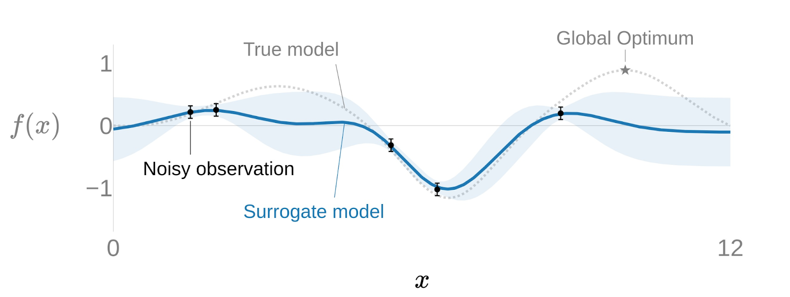
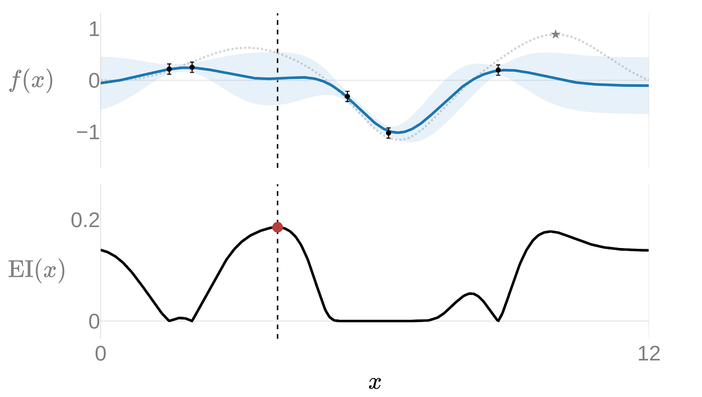

Introduction to Bayesian Optimization
TL;DR: Running blind experiments is expensive. Bayesian Optimization predicts where to look next and saves you millions.
Introduction#
Bayesian Optimization is ideal for black-box optimization problems. Black-box optimization problems are those where the objective function is not known or is very complex, it cannot be expressed mathematically and usually requires to run a real-life experiment.
A striking real-world example comes from Meta Research, where engineers used Bayesian Optimization to develop a concrete formula with optimal compressive strength and low CO2 emissions. The compressive strength of a concrete mix cannot be predicted from its ingredients alone; it must be measured by pouring, curing, and physically testing each batch.
- Engineering At Meta: Using AI to make lower-carbon, faster-curing concrete
- Github: Sustainable Concrete
At its core, Bayesian Optimization uses probabilistic models to make an educated guess about which set of parameters is most likely to yield the best result. Instead of blindly searching through possibilities, it learns from each experiment and strategically picks the next one. The result is fed back into the model, the model updates its beliefs, and the cycle repeats, getting smarter with every iteration.
Bayesian Optimization vs Global Search Methods#
When you need to optimize a function that isn't differentiable or convex, the traditional playbook calls for global search methods. These approaches systematically explore large swaths of the search space, which often means wasting precious experiments on unpromising regions.
Here are the most common alternatives:
- Genetic Algorithms: Inspired by natural selection, they maintain a population of candidate solutions. The best survive, reproduce with random mutations, and evolve over generations. Effective, but they need a large number of evaluations before meaningful patterns emerge
- Simulated Annealing: Starts with a random solution and makes random jumps to neighbors. If a neighbor is better, it's kept. Over time, the "temperature" drops and the jumps get smaller, focusing the search. The risk? It can easily get trapped in local optima before the temperature cools
- Particle Swarm Optimization: A swarm of candidate solutions moves through the search space, with each particle drawn toward the best solution found so far. It converges more gracefully, but still requires many evaluations to build consensus
The Exploration-Exploitation Tradeoff#
Every optimizer faces the same problem: exploration (trying new, untested regions) versus exploitation (refining the areas that already look good). Get the balance wrong, and you either waste experiments on random guessing or get stuck in a local optimum.
Global search methods lean heavily on exploration through random jumps and mutations. Bayesian Optimization builds a probabilistic model of the objective function and uses it to quantify the tradeoff. At each step, it asks, "Where is the expected improvement highest?", balancing uncertainty (exploration) against predicted performance (exploitation).
How Does Bayesian Optimization Work?#
Suppose we want to optimize a black-box function \(f(x)\). Since we can't observe it directly, and real experiments carry noise, we represent it with a Surrogate Model: \(y = f(x) + \epsilon\).

Image source: Adaptive Experimentation (Ax) - ax.devThe surrogate model is a Gaussian Process (GP), defined as \(f(x) \sim GP(m(x), k(x, x'))\), where:
- \(m(x)\) is the mean function, our best estimate of the objective at each point
- \(k(x, x')\) is the covariance function (typically a Gaussian kernel: \(k(x, x') = \sigma^2 \exp\left(-\frac{\|x - x'\|^2}{2l^2}\right)\)), which encodes how correlated nearby points are
In other words:
- At points we've already evaluated, the GP has low uncertainty and a well-defined mean
- At points we haven't visited, the GP interpolates using the covariance function, producing both a prediction and a confidence interval
- The further a point is from observed data, the wider its confidence interval, signaling that we know less about that region
The Acquisition Function#
With a surrogate model in hand, we need a strategy to decide where to sample next. That's the job of the Acquisition Function. The most widely used is the Expected Improvement (EI):
where \(f^*\) is the best objective value observed so far. In plain terms, EI asks: "How much better than our current best result can we reasonably expect this point to be?" Points with high predicted value or high uncertainty score well, naturally balancing exploitation and exploration.
The Sequential Loop#
Bayesian Optimization proceeds iteratively:
- Fit a Gaussian Process to all observed data
- Evaluate the acquisition function across the search space to identify the most promising candidate
- Run the experiment at that candidate and observe the result
- Feed the result back into the GP, update the model, and repeat
The following animation shows this loop in action for a single-variable optimization:

Image source: Adaptive Experimentation (Ax) - ax.devNotice how the uncertainty (shaded region) shrinks around observed points, and the algorithm quickly focuses on the most promising areas rather than exhaustively trying on the entire domain.
Adaptive Experimentation with Ax#
Several libraries implement Bayesian Optimization, but Adaptive Experimentation (Ax), developed by Meta, stands out for its clean, high-level API. Built on top of BoTorch (which itself is built on PyTorch), Ax abstracts away the mathematical complexity and lets you focus on your experiment.
You define your parameters, tell Ax what to optimize, and it handles the surrogate modeling, acquisition function selection, and trial generation under the hood. The documentation is available at ax.dev.
A Bayesian Optimization Example: the Hartmann Function#
To demonstrate the power of Bayesian Optimization, let's apply it to a classic benchmark: finding the global optimum of the Hartmann function in 6 dimensions.
The Hartmann function is defined as:
What makes this function challenging is that it has multiple local optima and a single global optimum, making it easy for naive optimizers to get stuck.
Here's what it looks like in 2 dimensions (the 6D version follows the same idea, but cannot be visualized):

Even though we know the formula, finding the global optimum is non-trivial. Let's see how the traditional methods would fare:
- Simulated Annealing: It will probably get stuck in a local optimum
- Genetic Algorithms: Requires too many experiments, the success rate would be totally random
- Particle Swarm Optimization: Probably better, the local optima will move towards the global optimum, but still requires too many experiments
To put the scale in perspective: each of the 6 input dimensions ranges from 0 to 1. A brute-force grid search with a step of 0.1 would require \(10^6\) evaluations. With Bayesian Optimization, we found the global optimum in fewer than 45 experiments.
Here's the code using Ax:
# Create the Ax Client
client = Client()
# The Hartmann function has 6 variables, each one between 0 and 1.
parameters = [
RangeParameterConfig(name="x1", parameter_type="float", bounds=(0, 1)),
RangeParameterConfig(name="x2", parameter_type="float", bounds=(0, 1)),
RangeParameterConfig(name="x3", parameter_type="float", bounds=(0, 1)),
RangeParameterConfig(name="x4", parameter_type="float", bounds=(0, 1)),
RangeParameterConfig(name="x5", parameter_type="float", bounds=(0, 1)),
RangeParameterConfig(name="x6", parameter_type="float", bounds=(0, 1)),
]
client.configure_experiment(parameters=parameters)
# The "-" sign transforms this into a minimization problem.
client.configure_optimization(objective="-hartmann")
# Run the optimization loop: 10 batches of 5 trials each.
for _ in range(10):
# Ask Ax for the next batch of parameters to try.
trials = client.get_next_trials(max_trials=5)
for trial_index, parameters in trials.items():
# Evaluate the Hartmann function with the suggested parameters.
result = hartmann6(
parameters["x1"], parameters["x2"], parameters["x3"],
parameters["x4"], parameters["x5"], parameters["x6"],
)
# Report the result back to Ax.
client.complete_trial(
trial_index=trial_index,
raw_data={"hartmann": result},
)
# Check the best result so far.
best_parameters, prediction, index, name = client.get_best_parameterization()
print("Best Parameters:", best_parameters)
print("Prediction (mean, variance):", prediction)
The result? Ax found an optimum of -3.29, while the known global optimum of the Hartmann function is -3.32. That's less than a 0.9% error, achieved with only 45 evaluations instead of a million.
Conclusion#
Bayesian Optimization turns the expensive trial-and-error of black-box optimization into a deliberate, data-driven process. By building a probabilistic model of the objective and using it to guide each experiment, it consistently reaches near-optimal solutions in a fraction of the evaluations that traditional methods require.
Ax makes this approach accessible. Its clean API handles the heavy lifting of surrogate modeling and acquisition function optimization, so you can focus on designing your experiments rather than implementing the math.
Next Steps#
In upcoming articles, I'll show how Bayesian Optimization can be applied to real-world marketing campaigns, finding ad bidding strategies that lower costs while increasing revenue. I'll also cover multi-objective optimization, where the goal isn't a single best answer but a Pareto frontier that maps the tradeoffs between competing objectives.
References#
- Engineering At Meta: Efficient Optimization With Ax, an Open Platform for Adaptive Experimentation
- Engineering At Meta: Using AI to make lower-carbon, faster-curing concrete
- Github: Sustainable Concrete
- Ax: A Platform for Adaptive Experimentation
- Ax Documentation
- BoTorch: A Framework for Efficient Monte-Carlo Bayesian Optimization